De Vooruitblik / Partners
Samen gemaakt
Een gezamenlijk project waarin auteurs, universiteiten, partners en mediaorganisaties samenwerken.

Initiatiefnemers
Maakt wetenschappelijke kennis toegankelijk voor een breed publiek, via video’s, podcasts, evenementen en publicaties.

De actualiteitszender van de VRT, met betrouwbare informatie, verdieping en duiding.

Belgische uitgeverij met een sterke traditie in educatieve, algemene en wetenschappelijk geïnspireerde publicaties.
De vijf Vlaamse universiteiten
Zij leveren experten, ondersteunen de communicatie en dragen bij aan de wetenschappelijke kwaliteit.


Met steun van


Deel De Vooruitblik
Zet het boek in je e-mailhandtekening. Download een banner en voeg hem toe.